|
Flash Newsへ |
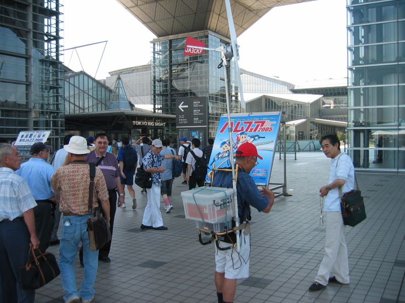
|
◎ Ham Fair 2005 開催 「ハムフェア2005」が8月20日(土)、21日(日)の両日、東京有明の東京ビッグサイト・西2ホールで開催された。 昨年に比べてビジネスコーナー、JAIAコーナーの出展数が少なく全体的に"こじんまり"した感じの今年の会場だったが、 例年並のクラブコーナーには多くのハムが早朝から詰めかけ賑わっていた。 JAIAコーナーではI-COMが新製品の小型オールバンド、オールモード機のIC-7000をメインに据えてPR。 ビジネスコーナーのスタンダード(旧YAESU)では本格的に市場にお目見えし始めた"FT-DX 9000シリーズ"に人気が集中していた。 また、参考出品されたHF＆50MHzオールモード機「FT-2000」が注目を集めていた。 販売は来年、価格は30万円台になる模様。 20日(土)は昨年に続きJARL主催の「アイボールQSOパーティー」と「JAPAN DX Meeting」が合同開催、 多くの海外からのゲストを向かえ懇親会の会場は大賑わいだった。 JARL発表によると今年の来場者はのべ29,000人(初日=16,000、2日目=13,000)だった。 |
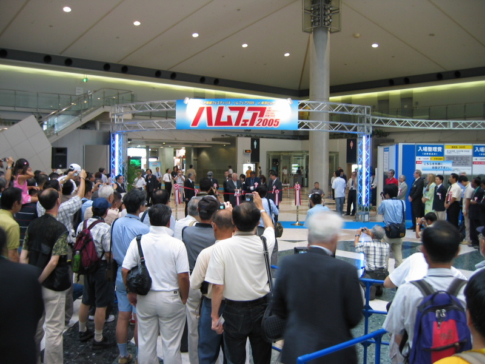
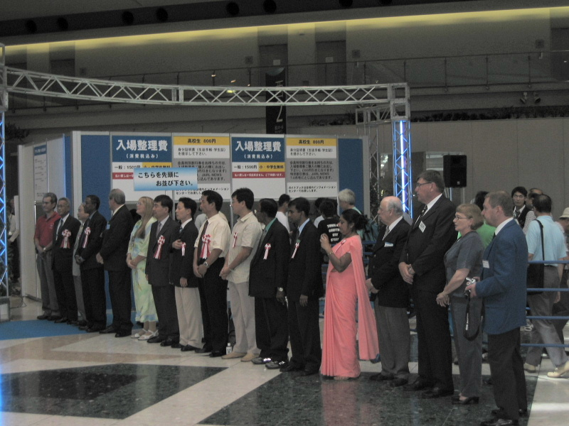
◎ ハムフェア2005イベントコーナー・プログラム
20(土) 11:00 「EchoLink,eQSO,WiRESを楽しもう」(JS1CYI・吉沢浩史) 12:00 QRPデー制定20周年記念 (1)QRPと私(JA1AA・庄野久男) (2)特別記念局8J1VLPの歩みと今後の広がり(JA1XB・石井正紀） 13:00 「スマトラ沖大地震〜インド洋大津波でのスリランカにおける非常通信活動について」 Radio Society of Sri Lanka 4S7VK・ビクター会長ほか 14:00 JAIAタイム「楽しい移動運用アンテナ大研究」(JAIA技術委員会・第一電波工業(株) 小杉修身) 15:00 表彰式・自作品コンテスト、絵画コンクール(総務省/JARL) 21(日) 11:00 「CubeSatの現況と今後の打ち上げ計画」(東大・東工大・日大のみなさん) 12:00 KH8SI SWAINS島DXペディション報告(SWAINS島DXペディションチーム・JR2KDN・吉田雄一) 13:00 「コンテストおよびサイクル23・24の電波伝搬」 (ARRL・NCJ編集長・K9LA Carl Luetzlschwab/AE9YL Victoria A Luetzlschwab) 14:00 JAIAタイム「デジタル通信 D-STARについて」(JAIA普及推進委員会・アイコム(株)櫻井紀佳) 15:00 表彰式・関東UHFコンテスト(JARL関東地方本部) |
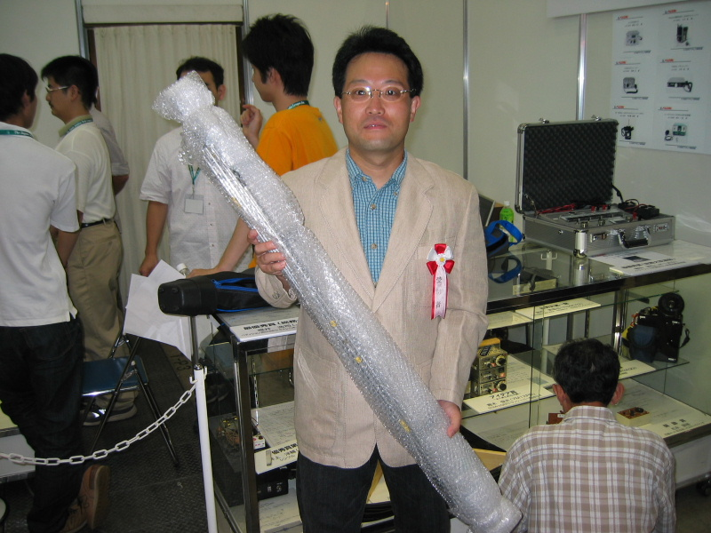
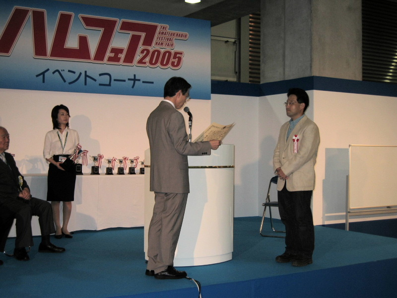
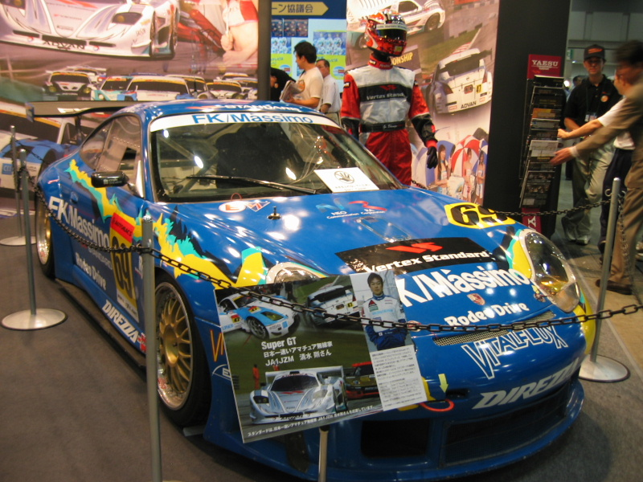
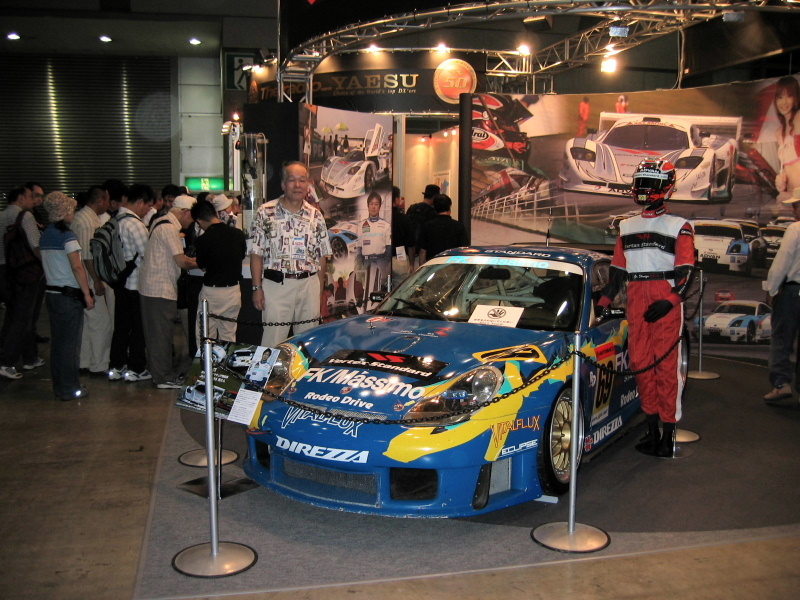
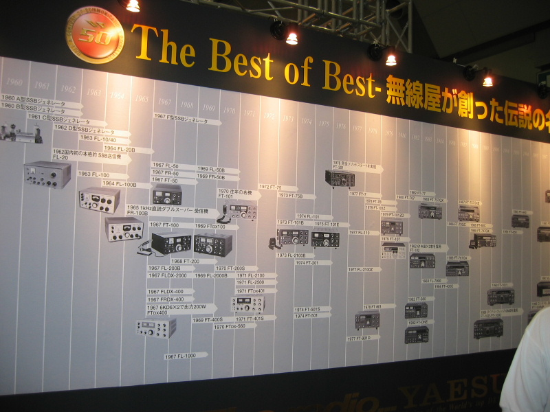
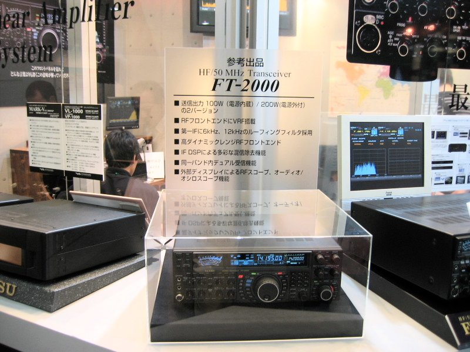
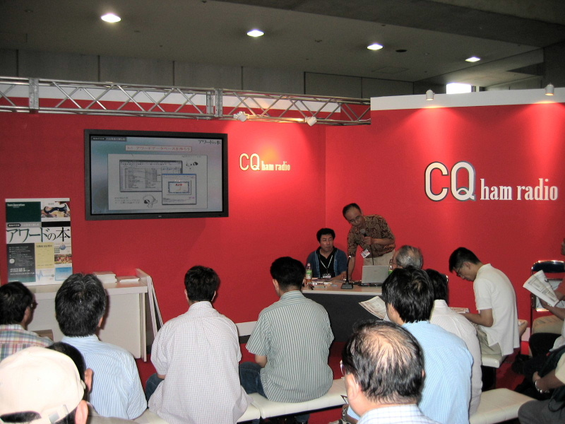
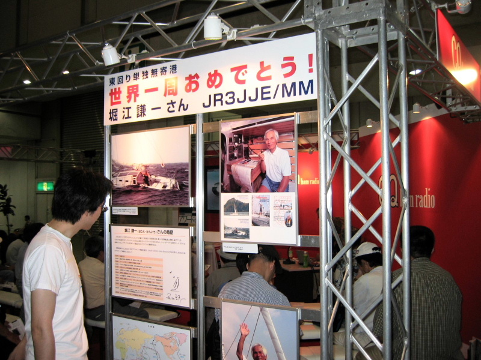
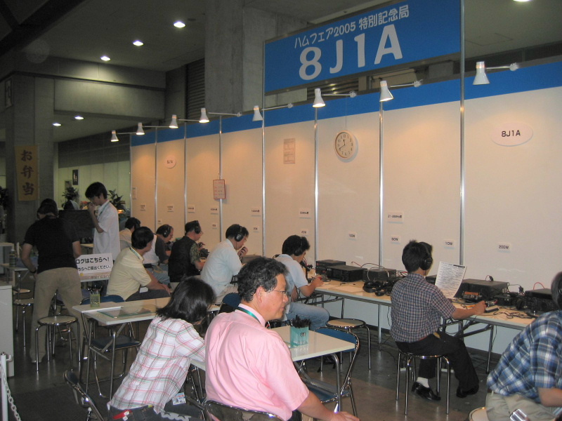
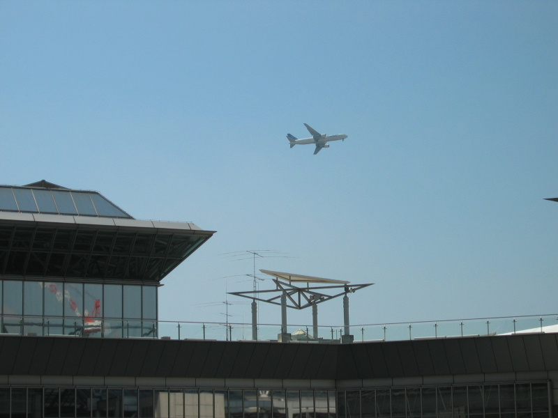
| 恒例となっているDXCCのフィールドチェックはARRLからNCJ編集長・K9LA Carl氏とXYLのAE9YL Victoriaさんが来日した。 |
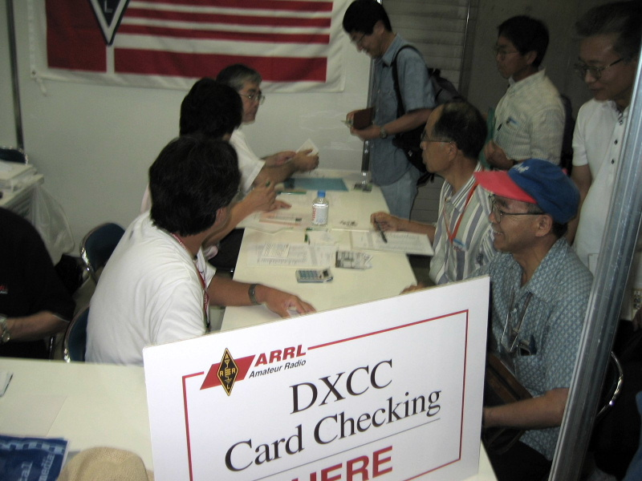
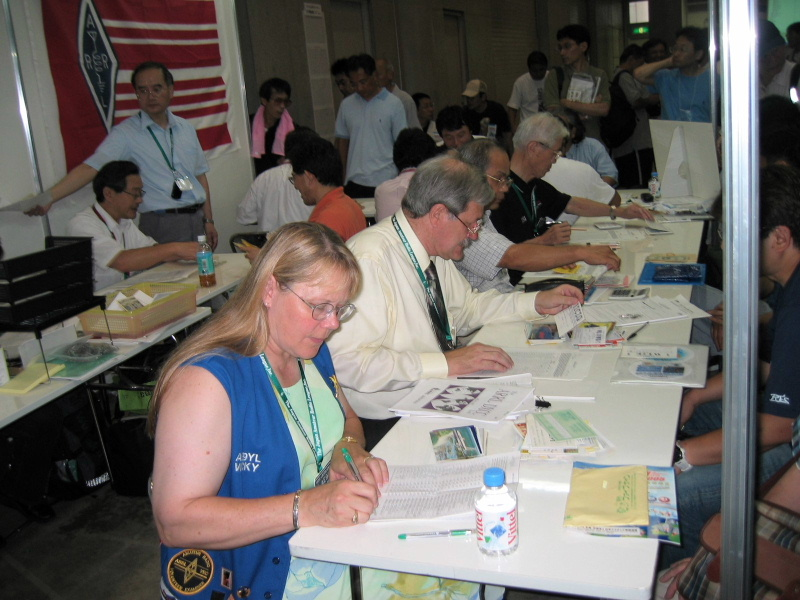
|
[ハムフェアの歴史] ハム・フェアの前身「第1回全日本ハムベンション」が1975年(昭和50年)、静岡県富士宮市で開催された。 会場は富士の裾野に広がる朝霧高原のグリンパーク。 1976年の第2回では特別記念局の8J2HAMも開局、交通の便は良くないものの自然を満喫出来る会場は多くの来場者で賑わった。 この実績を基礎に、1977年(昭和52年)「全日本ハムベンション」を引き継ぐ形で「第1回アマチュア無線フェスティバル」(ハムフェア)が、 JARLの主催で東京都中央区晴海の東京貿易センターで開催される事になった。 第1回は9月23日から25日までの開催期間にも関わらず、初日から多くの入場者がつめかけた。 フェスティバルの特別記念局・8J1HAMも開設、多くの来場者が運用した。 |
|
Flash Newsへ |